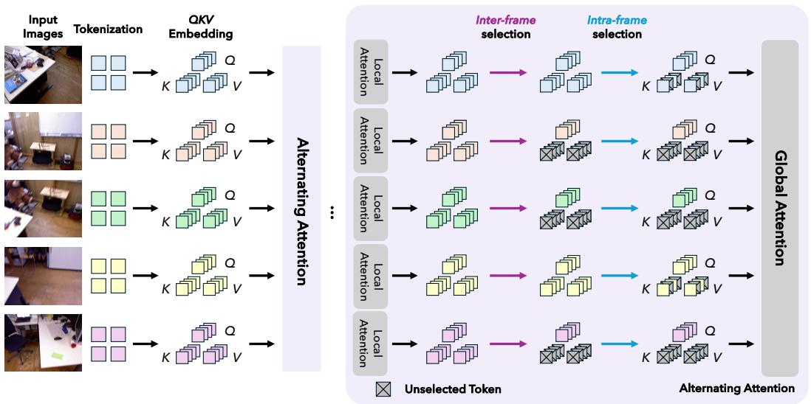

先说结论。随着 VGGT/geometry foundation model 进入通用视觉 pipeline，token 预算和跨帧 token 覆盖会成为预训练和推理的共同瓶颈。 为多视图 3D/visual geometry transformer 提供简单通用的 token 选择框架。
Figureure 1 · : We accelerate visual geometry transformers via a two-stage hierarchiFigure 1: We accelerate visual geometry transformers via a two-stage hierarchical token selection scheme: inter-frame selection followed by intra-frame selection. Our training-free method scales nearlinearly with the number of input frames, substantially improving the efficiency of visual geometry transformers with a comparable acceleration ratio with LiteVGGT [72], which requires costly full model training. Overall, our method achieves a superior trade-off between efficiency and accuracy.这张图/表用于判断 Good Token Hunting 的实验收益来自哪里。重点看替换、消融或跨模型设置下趋势是否一致，而不是只看单个最高分。

Figureure 2 · : Pipeline of GoToHuntFigure 2: Pipeline of GoToHunt. Token selection is performed in the K/V space prior to the global attention layers, to determine which key/value tokens each query token interacts with. Our approach follows a two-stage hierarchical design: inter-frame selection first conducts frame-level selection, while intra-frame selection subsequently discard more tokens within each selected frame.这张图概括 Good Token Hunting 的整体方法流程。阅读时先看模块之间传递的训练信号，再看作者如何把目标拆成可优化的子问题。
核心问题
随着 VGGT/geometry foundation model 进入通用视觉 pipeline，token 预算和跨帧 token 覆盖会成为预训练和推理的共同瓶颈。